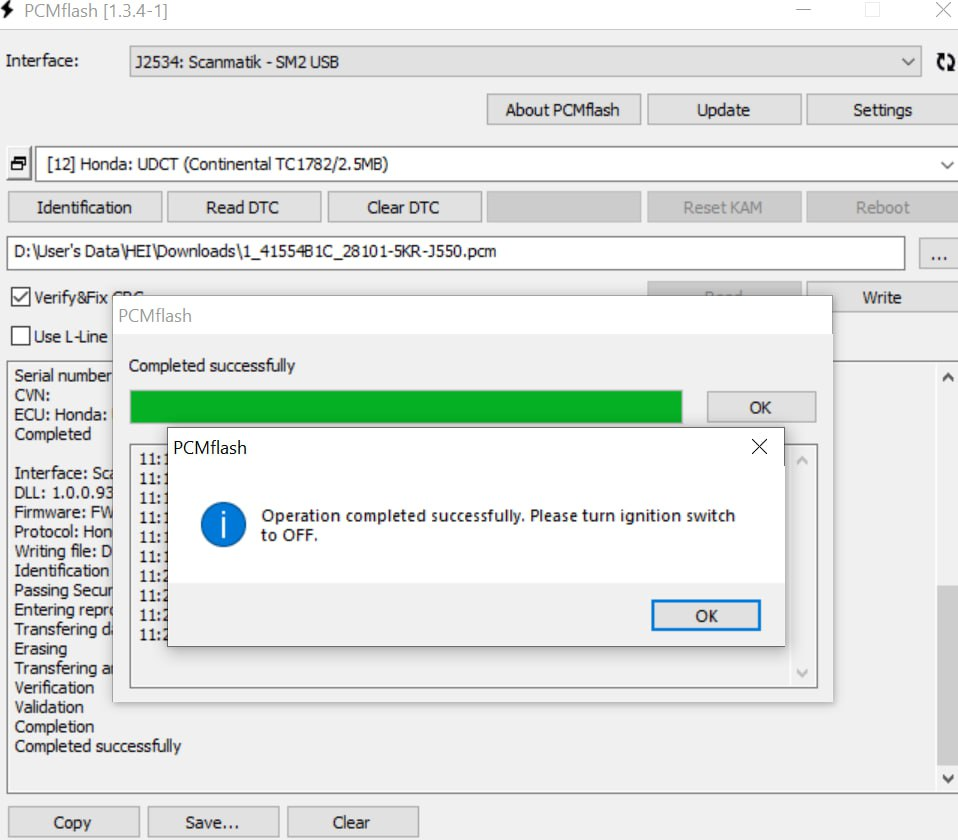
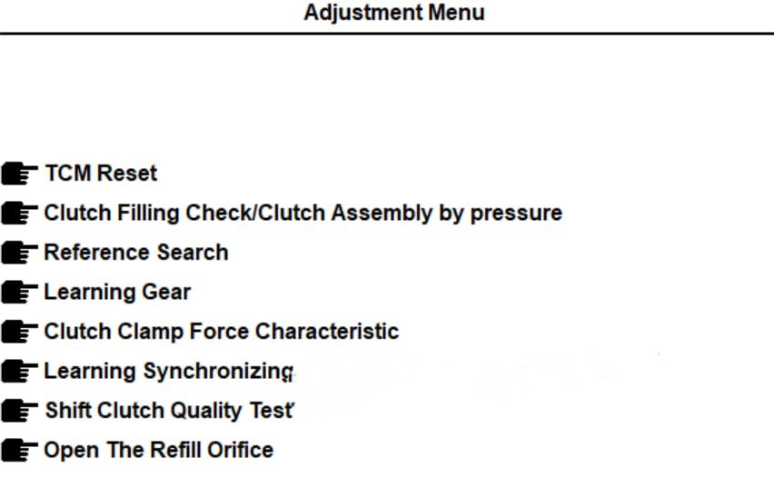
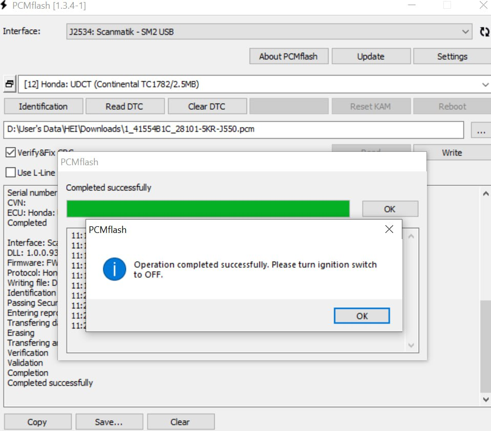
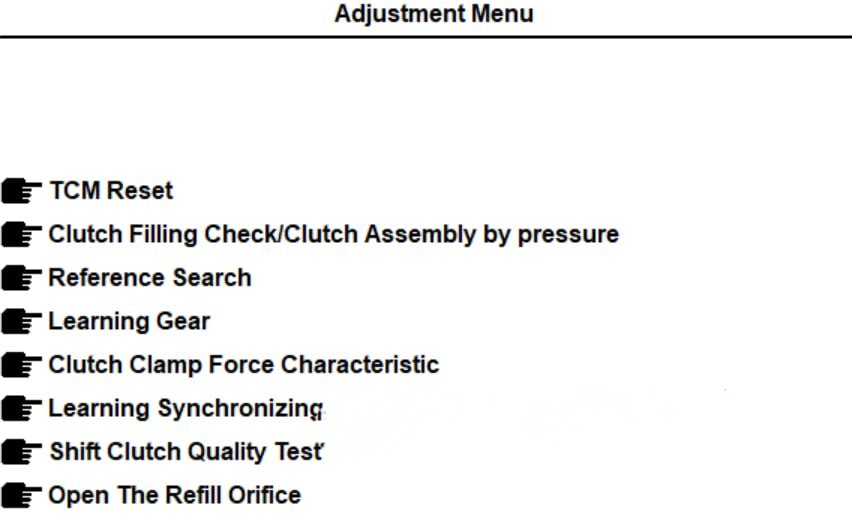
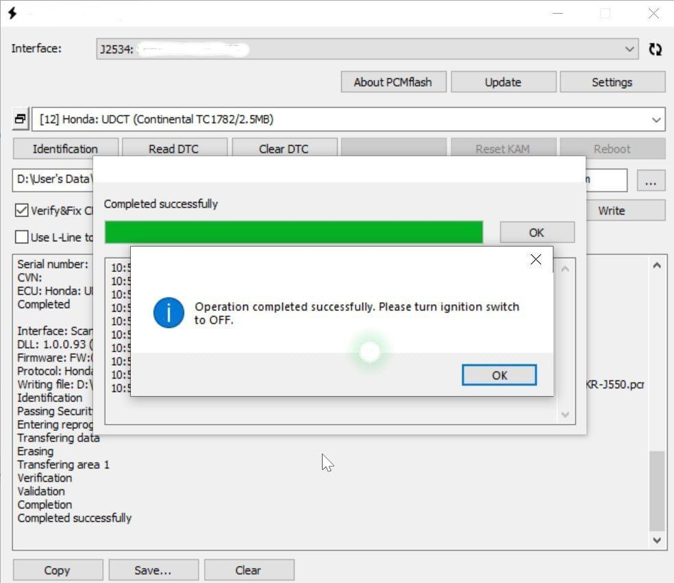
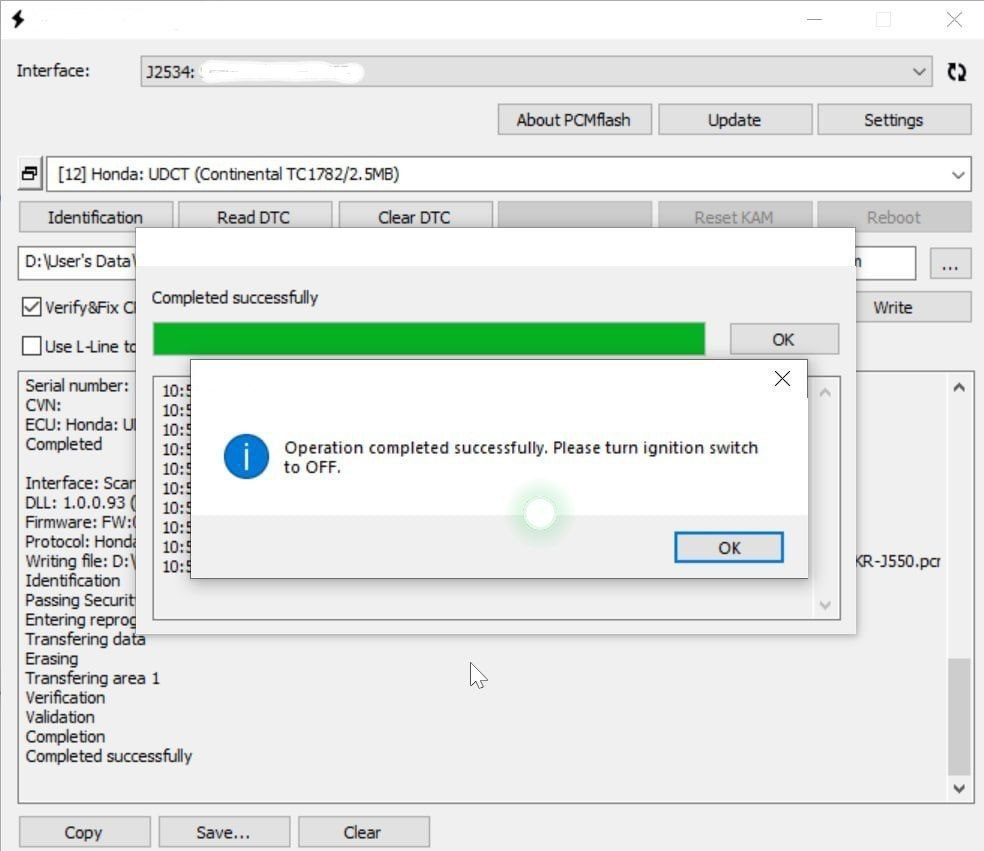

Reports
| Date | Topic | Job Type | Car Model | Photo | Description |
|---|---|---|---|---|---|
| 2023-12-22 | Fit GP5 in Dublin Regular Update | Software Update | Fit GP5 |
 



|
This owner encountered a slight issue with the car – the transmission felt a bit rough even after calibration. To enhance the driving experience, we conducted the latest ECU and transmission update, ensuring a consistently smooth ride. Subsequently, no additional issues have been observed. 🚗✨ |
| 2024-01-07 | Shuttle GP7 in Ennis with clutch issues | Software Update | Shuttle GP7 |


 

|
The client acquired a 2015 Honda Shuttle GP7 from Japan in 2021 with approximately 80,000 km mileage. Subsequently, reported issues emerged, including abnormal noise from the clutch release bearing and the appearance of a P073F error for 1st gear. Post-driving 100,000+ km, on a highway the clutch failed. A genuine clutch set, costing about 2400 euros, was procured, and replacement was arranged in Dublin. Given the limited servicing for Japanese imports locally, the replacing team claimed to have "calibrated" it, though the client remained sceptical. Procuring a calibration tool, the client undertook the calibration personally, yet rough clutch kicking persisted. My investigation revealed outdated software, likely factory-installed, with no history of undergoing Honda recall campaigns. I then updated all modules to the latest versions and it rectified the issues, resulting in a notably smoother driving experience. Safe and enjoyable driving!!! |
| 2024-01-28 | Vezel RU3 for calibration after Japan | Transmission Calibration | Vezel RU3 |
After purchasing the vehicle, the client wanted to have the transmission calibrated since it is impossible to know for sure whether the procedure was done before, or when if so. All is now calibrated and runs smoothly the way it should. |
{kind=link}
{kind=link}
{kind=link}
Join Our Honda Club!
Take care of your vehicle and join our happy Honda community. Be a part of the enthusiasts who share their experiences and love for Honda cars.